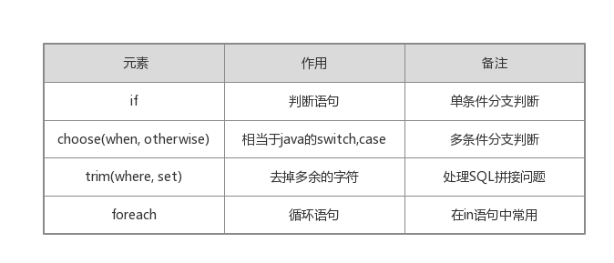

前言
接着之前介绍Mybatis入门的内容，本篇博客将进一步学习mybatis框架的使用。
MyBatis配置
在之前的入门篇中介绍的spring-mybatis的例子里，在mybatis配置文件中我们只使用到了mybatis的映射器配置与日志配置，没有用到mybatis的其他配置项，接下来来看看mybatis的配置文件提供了哪些可配置的属性。
|
|
上述mybatis的配置文件中，列举了所有可配置的选项，并且这些配置项不能颠倒顺序，否则mybatis启动会报错。
接下来简答介绍一些常用的配置项：
- properties属性：通过properties可以配置一些参数，允许将参数放在xml文件或者properties文件中，方便统一管理和修改系统参数。
- settings设置项：settings设置里面有很多可配置的地方，这些配置项直接影响mybatis的运行，但是大部分时间使用默认值即可，如果需要修改settings内配置项，可以查看mybatis官网相关的说明，官网的解释很详细且权威，传送门在这：点击
- typeHandler类型转换器：在typeHandler中，分为jdbcType和javaType，其中jdbcType用于描述数据库的数据类型，而javaType用于描述java的数据类型，那么typeHandler的作用就是完成jdbcType与javaType之间的互相转换的。大多数情况下，mybatis会自动探测并使用系统自定义的typeHandler进行处理，但是mybatis也允许用户自定义typeHandler，来完成用户特定的转换需求，例如枚举类型的转换。如何自定义typeHandler并使用自定义的typeHandler在官网上也有举例说明，这里就不赘述。
- environments环境配置：环境配置主要是配置数据库信息的，可以配置事务管理器与数据源信息，但是在实际中一般会将mybatis置于spring容器内使用，所以一般采用spring的数据源配置与数据库事务管理功能。
- mappers映射器：映射器是mybatis最核心的组件，mappers这个配置项主要用于引入映射器，一般通过映射器的映射xml文件来引入或者通过映射器的接口的全限定包名来引入。
关于mybatis的配置，大多数的情况下使用默认的配置即可，如果需要自己定义一些配置，建议去官网上查看配置的详细情况，这里是大致列举了一些常用配置的作用而已。今天还惊喜的发现mybatis的参考文档竟然有中文版，当然如果觉得中文翻译的意思不准确可以直接看英文原版。
映射器
映射器是mybatis最核心的组件，它由一个接口加上xml文件组成。在映射器中可以配置参数，各类的SQL语句，缓存，级联等内容，并且可以通过映射规则映射到指定的POJO上。映射器的接口与映射xml文件配置使用，可以有效的消除jdbc底层代码。
映射器的映射xml文件有以下几个元素：
- cache – 给定命名空间的缓存配置
- cache-ref – 其他命名空间缓存配置的引用
- resultMap – 描述如何从数据库结果集中来加载对象，它将提供映射规则
- sql – 可被其他语句引用的可重用语句块，可以定义一部分SQL，然后在其他地方引用
- insert – 映射插入语句，执行后返回一个整数，代表插入的条数
- update – 映射更新语句，执行后返回一个整数，代表更新的条数
- delete – 映射删除语句，执行后返回一个整数，代表删除的条数
- select – 映射查询语句，返回查询结果
select元素
映射器中的select元素代表SQL的select语句，用于查询。select元素中有以下常用的属性：
- id:在Mapper的命名空间中唯一的标识符。Mapper的命名空间与select元素的id将唯一定位对应的映射器接口的某个方法。
- parameterType：将会传入这条语句的参数类的完全限定名或别名，可以选择Java Bean，Map等参数类型传递给SQL。这个属性是可选的，mybatis可以通过TypeHandler推断出具体传入语句的参数。
- resultType：从这条语句中返回的期望类型的类的完全限定名或别名。注意如果是集合情形，那应该是集合可以包含的类型，而不能是集合本身。
- resultMap：映射集的引用，用于结果集的映射，完成结果的映射功能。注意resultType和resultMap不能同时使用。
- flushCache：将其设置为true，任何时候只要语句被调用，都会导致本地缓存和二级缓存都会被清空，默认值：false。
- useCache：将其设置为true，将会导致本条语句的结果被二级缓存，默认值：对select元素为true。
来看看在之前的入门篇的例子中的select元素：
|
|
当然还要配合映射器接口才能完成映射：
这里用到mybatis提供的自动映射功能，只要SQL的列名与POJO的属性名保持一致，同时在mybatis的配置文件中settings元素的autoMappingBehavior是开启的(默认是开启)即可完成自动映射。如果列名与属性名不一致的话，还可以通过SQL的别名机制来处理。比如说，假如原来列名为person_name，属性名为personName，那么在SQL中就可以这么写：select person_name as personName … 这样同样可以完成自动映射。
在上述接口方法中，用到了@Param注解用于传递参数，这是mybatis为开发者提供的注解，可以通过它去定义映射器的参数名称，同时利用注解不仅仅可以传递一个参数也可以传递多个参数。除了使用注解，我们还可以用Java Bean来传递参数，将参数作为属性放入Bean中，传递参数给SQL的时候就只用传递一个Bean即可，SQL中可以直接引用Bean中的属性值。还是接着之前的例子来说明：
先定义一个传递参数的Bean–PersonParams：
|
|
映射器接口定义：
|
|
select元素：
|
|
这里特别说明关于select元素返回一个对象或者对象集合的问题：
- 返回数据类型由DAO中的接口和映射xml文件共同决定。另外，不论是返回单一对象还是对象列表，映射xml中的配置都是一样的，都是resultType=“ . .”类型或resultMap=”resultMap-ref”*。
- 每一次mybatis从数据库中select数据之后，都会检查数据条数和DAO中定义的返回值是否匹配。
- 若返回一条数据，DAO中定义的返回值是一个对象或对象的List列表，则可以正常匹配，将查询的数据按照DAO中定义的返回值存放。
- 若返回多条数据，DAO中定义的返回值是一个对象，则无法将多条数据映射为一个对象，此时mybatis报错。
resultMap元素
通过resultType加上mybatis的自动映射可以应对大多数的结果集的映射需求，但是这种方法无法定义更多的属性，比如typeHandler，级联等。为了支持更加复杂的映射，mybatis提供了resultMap属性来完成SQL到Java Bean的映射关系定义。接下来，用resulyMap改写之前使用自动映射的select元素。
|
|
子元素id代表主键，result代表属性，id和result元素的property属性代表POJO的属性名称，column代表SQL的列名，这样就将POJO的属性和SQL的列名进行一一对应了。
上述例子只是一个简单的例子，那么一个完整的resultMap元素的构成有哪些？
- constructor：类在实例化时,用来注入结果到构造方法中
- id：表示哪个列是主键
- result：注入到JavaBean属性的普通结果，配置POJO到SQL列名的映射关系
- association：一个复杂的类型关联;许多结果将包成这种类型
- collection：复杂类型的集
- discriminator：使用结果值来决定使用哪个结果映射
constructor元素用于配置构造方法，一个POJO可能不存在没有参数的构造方法，就要使用construtor元素来配置了。
id元素，result元素主要来定义POJO与SQL列名的映射规则，它们有如下属性：
- property:映射规则中的POJO的属性名，可以用导航式字段，例如需要访问Person类的Address属性的id，就可以写成Address.id
- column：对应的SQL的列名
- javaType：Java类型
- jdbcType：数据库类型
- typeHandler：类型处理器，允许使用自定义的类型处理器
其中association，collection和discriminator这些元素是与结果映射的级联相关的。Mybatis支持级联映射，简单来说，假如我们select一个person类，person类有一个属性为address，address也是一个POJO，也就是说需要再进行一次select才能查询到address类的信息。这里需要说明的是，级联不是必须的，级联可以便捷的获取关联数据，但是如果级联太多的话会影响执行效率，也就是著名的N+1问题(如果有N个关联关系完成了级联，那么只要再加入一个关联关系，就变成了N+1个，所有的级联SQL都会被执行，显然不是所有数据是我们感兴趣的，造成了资源的浪费与性能的浪费)。为了应对级联中的N+1问题，mybatis支持延迟加载，在select的时候并不是一次性取出所有的SQL结果来映射，对于那些不常用的级联数据等到需要的时候再取出。在mybatis的全局配置文件中可以设定延迟加载属性，同时在级联元素association和collection中的fetchType属性也可以定义延迟加载。
insert,update,delete
相比于select来说，insert,update,delete就很简单了，它们执行的结果返回的是整数，用以标识该SQL语句影响了数据库的记录行数，不需要进行结果集的映射。除此之外，insert元素是支持主键回填的，在inser语句中有一个属性useGeneratedKeys，用来控制是否使用数据库生成的主键来回填到POJO，默认值为false。当打开了主键回填之后，还要配置keyProperty或者keyColumn，告诉mybatis把生成的主键放入哪个属性中。至于在实际中用不用得到数据库生成的主键，我也不能完全肯定，这里只要知道mybatis是支持主键回填的即可，使用起来也很容易。
sql元素
这个元素可以被用来定义可重用的SQL代码段，可以包含在其他语句中。 比如：
|
|
动态SQL
mybatis提供了对SQL语句动态的组装能力，大量的判断都可以在mybatis的映射xml里面配置，大大减少了代码量，提供了灵活性。
mybatis的动态SQL包括以下几种元素，如图所示：

if
if元素使用的场景适用于在SQL语句的where子句中动态地选择某几个判断条件作为SQL语句的一部分进行拼接。这里偷个懒，直接引用官方参考文档里的例子：
|
|
如果传入的参数title不是null，那么就将 AND title like #{title} 这子句拼接在where之后，这样就可以有条件地包含where子句的一部分。
choose(when,otherwise)
if元素是单条件的，choose元素就是多条件的选择类似java里的switch语句，原理一样，还是接着上面的例子来举例：
|
|
上述参考文档中的例子otherwise元素写的是 AND featured = 1 是为了解决前面的所有case都不满足的情况，我建议写成 AND 1 = 1 更好理解。
该动态SQL语句的功能：如果参数提供了“title”就按“title”查找，提供了“author”就按“author”查找，若两者都没有提供，就返回所有符合默认条件的查询结果集。
trim(where,set)
前面的例子中的where子句总会有一个默认的查询条件也就是例子中的 state = ‘ACTIVE’ ，如果state也设置成动态的呢？可以通过where,set元素来达到这个需求。
|
|
同样如果是update子句，那么也就相应的set元素，如下：
|
|
如果where,set都无法满足动态拼接SQL的需求，我们可以使用trim来自定义如何拼接SQL子句，where和set只是mybatis定义好的拼接SQL的方法而已，但这也已经可以满足大多数需求了。
foreach
动态 SQL 的另外一个常用的必要操作是需要对一个集合进行遍历，通常是在构建 IN 条件语句的时候。还是参考文档里买的例子：
|
|
foreach元素允许指定一个集合，声明可以用在元素体内的集合项和索引变量，也允许你指定开闭匹配的字符串以及在迭代中间放置分隔符。我们可以将任何可迭代对象（如列表、集合等）和任何的字典或者数组对象传递给foreach作为集合参数。当使用可迭代对象或者数组时，index是当前迭代的次数，item的值是本次迭代获取的元素。当使用字典（或者Map.Entry对象的集合）时，index是键，item是值。
总结
提供一个最好的学习mybatis的教材：官方参考文档。mybatis的使用很简单，很容易上手，按照参考文档多用就会很熟练了。至于mybatis的原理，看了mybatis的使用方法之后都能猜出来，肯定是动态代理了，映射器只提供了接口，mybatis内部将对接口进行动态代理，完成既定的逻辑。